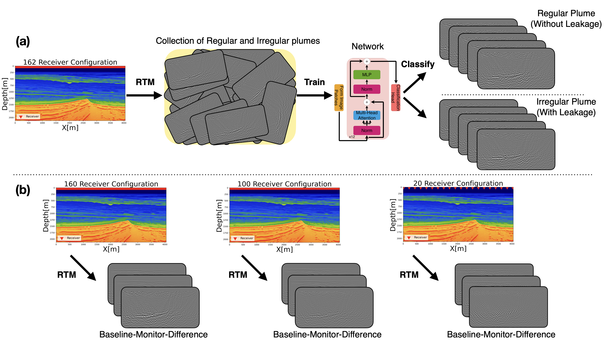
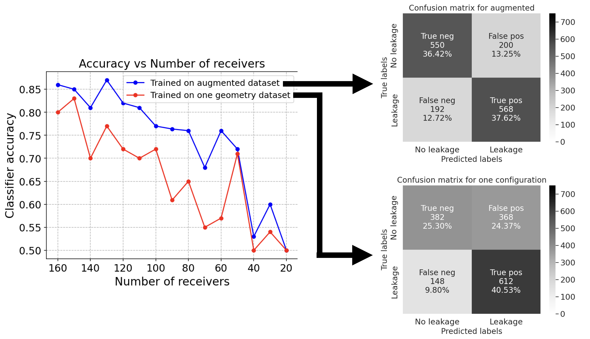

Enhancing CO2 Leakage Detectability via Dataset Augmentation
![]()
Objectives/Scope
Previous work showed that neural classifiers can be trained to detect CO2 leakage from time-lapse seismic images. While this result is crucial to the global deployment of geological carbon storage (GCS), its success depends on relatively dense non-replicated time-lapse data acquisition. In this study, we show that by augmenting the training set with various coarse receiver samplings and corresponding seismic images, we can improve the leakage detection capabilities and accuracy while increasing the robustness with respect to low-cost coarse receiver samplings, e.g. ocean bottom nodes (OBNs).
Methods, Procedures, Process
To create a suitable training set, we derive permeability models from 2D proxy velocity models with a geology representative of potential GCS sites in the South of the North Sea. These models are derived from 3D imaged seismic and well-log data with realistic heterogeneity. Given these permeability models, we create a training set of seismically imaged CO2 plumes that behave regularly (without leakage) and irregularly (with leakage). After generating baseline and monitor surveys, time-lapse seismic images of the plume are created with reverse time migration (RTM). The CO2 plumes themselves are modeled with two-phase flow equations.
To create high-fidelity images, we deploy 162 receivers (25m apart) and 32 jittered sources (~125m apart). Given these images, we train our neural classifier based on a Vision Transformer network. As shown in Figure 1a, the classifier meets our ultimate purpose of distinguishing between regular and irregular plumes.
While the results are encouraging, the training and test images use high-fidelity imaging obtained with densely sampled OBNs. Unfortunately, in practice, we can not rely on dense receiver sampling due to the associated high costs and classifier performance deteriorates on images obtained from coarse receiver samplings. To overcome these issues, we augment the training dataset with time-lapse images computed from multiple acquisition geometries with coarse receiver samplings (between 25m and 200m spacing), shown in Figure 2b.

Results, Observations, Conclusions
Figure 2 shows that the network trained initially on 162 receiver configuration achieves high testing accuracy for acquisition geometries with more receivers. However, its performance degrades when the number of receivers decreases, rendering the classifier untrustworthy for less than 100 receivers. To compensate for this performance loss, we augment the training dataset with time-lapse difference images obtained from migrating the coarse datasets with between 20 and 160 random receivers.
We observe in Figure 2 that the network trained with the augmented dataset, containing those time-lapse images, provides higher accuracy for all receiver geometries and better robustness to coarse acquisition. Moreover, the confusion matrix metrics such as true negative have substantially increased, where positives and negatives are irregular and regular plume images, respectively, showing the improved trustworthiness of the new network to coarse and dense receiver configurations.
These results demonstrate that dataset augmentation enhances the generalization of our classifier and contributes to its leakage detection accuracy and trustworthiness. In terms of practical usage, this work suggests that a dataset based on a particular seismic time-lapse acquisition geometry can be readily made adaptable to different geometries by augmenting the dataset with time-lapse seismic images obtained from complementary random acquisition geometries. More information is in slimgroup.github.io/IMAGE2023.

Significance/Novelty
To our knowledge, this is the first study that generalizes and increases robustness of neural classifiers for CO2 leakage detection to receiver geometries of varying sampling density. We proposed an augmentation of the dataset with migrations from coarse geometries that improves the network’s generalization to changes in the receiver sampling. The results show that our study has the potential to lower dataset collection cost while training classifiers capable of automatic leakage detection from time-lapse seismic images computed from non-replicated surveys with low-cost receiver sampling.